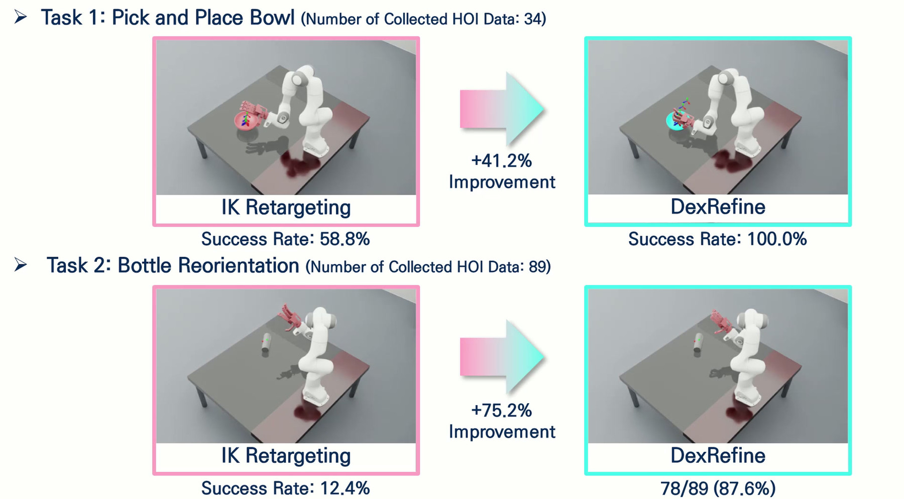

Dexterous manipulationDexRefine: Refine Human Motion to Physically Feasible Robotic Actions
Full citation
Humanoids Workshop 2025
H. Lee, S. H. Heo, and S. Yang, ”DexRefine: Refine Human Motion to Physically
Feasible Robotic Actions,” presented at the Workshop on Dexterous Manipulation, 2025
IEEE-RAS International Conference on Humanoid Robots (Humanoids).